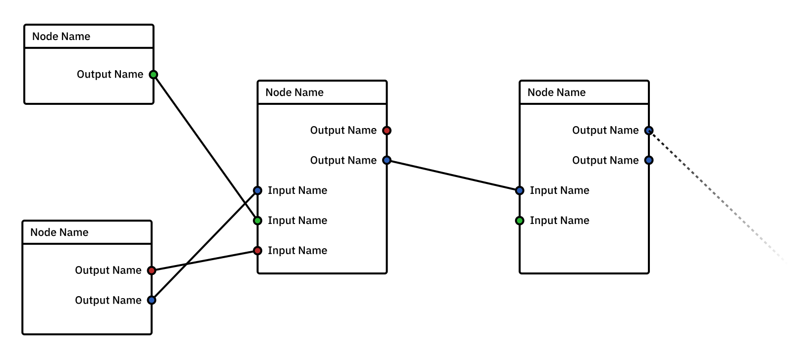

Intro to Nodes
Node-based software typically allows users to create complex results out of many simple and contained operations. These operations are non-destructive and chained together to form a type of Directed Acyclic Graph. As the name suggests, data flows in a single direction through the graph and cannot be looped or “cycled”.
All node-based software contains nodes (referred to in graph theory as “vertices”), and ways of connecting them (referred to in graph theory as “edges” though I like the term “pipes” when talking about software). Node-based software must also have somewhere to edit the properties of each node, either located in a separate panel or in some cases as a part of the node itself.
While not required 100% of the time, some nodes also have “sockets”, a small part of their interface intended to show the user where pipes can be connected.
Types of Nodes
There are two types of node-graphs that one can choose when developing node-based applications. Each comes with its own considerations, advantages, and disadvantages. Note that both node types can have multiple inputs but the amount is determined by the node’s functions.
Multi-In-Single-Out
The above diagram shows a simple multi-in-single-out node graph composed of three nodes. The blue sockets represent inputs whereas the red sockets represent outputs.
These nodes are typically best for graphs that mostly deal with a single common type of data. While described here as having a single type of output, there are typically no limits on how many nodes can be connected to this output. Rather, the limit of this paradigm is that each node is only capable of outputting one thing. In this type of node-graph all data is passed through the entire graph and utilized when called upon by a given node. Any changing of data-types is done outside the node graph.
Multi-in-single-out node graphs are typically laid out vertically and their graph structure is less complex than nodes with multiple outputs. They optimize for graph hierarchy and legibility at the cost of only having one output type.
For examples of multi-in-single-out nodes see the case study pages for Nuke, and Nodebox.
Multi-In-Multi-Out

This diagram shows a multi-in-multi-out node graph. These sockets are colour coded based on their data type.
These nodes can be helpful for graphs that must deal with many different types of data. Whereas multi-in-single-out nodes may require the user to select data-types elsewhere to clarify what data a given node is operating on, these nodes allow users to route specific data between nodes directly instead of relying on an external part of the interface to do so.
Multi-in-multi-out node graphs are typically laid out horizontally to accommodate their extra vertical space required for added labelling, and socket requirements. Note that they often also sacrifice graph hierarchy and legibility and instead optimize for flexibility of input and output routing.
For examples of multi-in-multi-out nodes see the case study pages for Blender, and Maya.